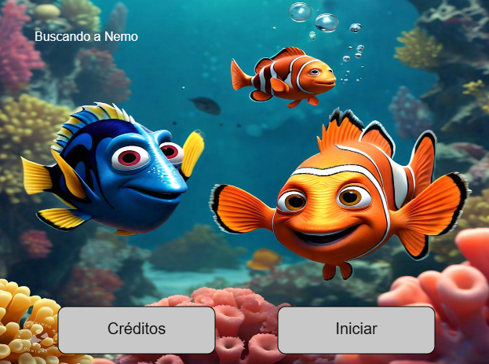
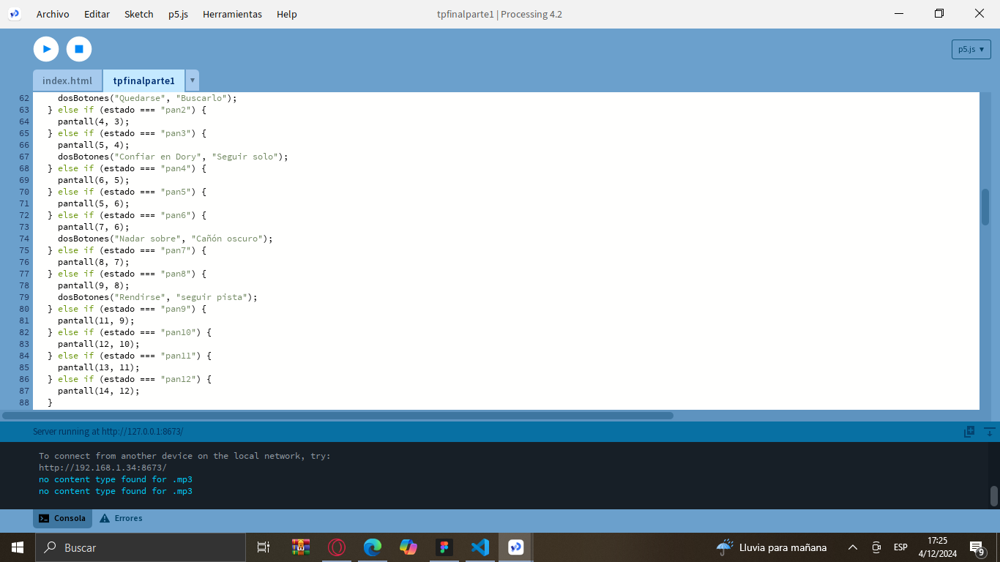

Temática
El juego se basa en una narrativa de aventura donde el jugador guía a Marlin, un pez payaso, en su búsqueda para encontrar a su hijo Nemo. La historia toma lugar en un mundo submarino lleno de personajes entrañables como Dory, y enfrenta al jugador con varios obstáculos y decisiones.


Proceso
- Preload de Imágenes y Sonidos: Imágenes y sonidos precargados para asegurar fluidez.
- Estructura de la Historia: Pantallas que cambian según las decisiones tomadas.
- Interacción con el Usuario: Botones para elegir opciones que afectan la narrativa.
¡Ayuda a Marlin a esquivar medusas y atrapar a Dory!
En este juego interactivo, Marlin debe navegar por el océano evitando medusas. A medida que avanza, su objetivo es atrapar a Dory para sumar puntos. ¡Pon a prueba tus reflejos y disfruta de esta emocionante aventura acuática!
Aventura Gráfica
Explora la narrativa de la película "Buscando a Nemo" y toma decisiones que afecten el desarrollo de la historia. ¡Vive una experiencia interactiva única!